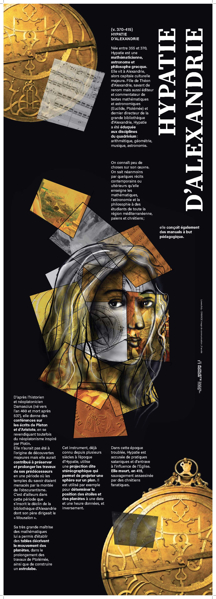
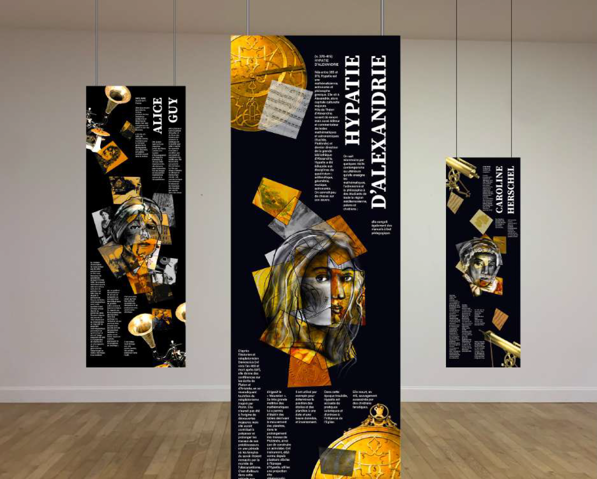

LES FEMMES AU MUSÉE
2024
Photoshop
Illustrator
signalétique
Commande pour le Musée des Arts et Métiers, visant à mettre en lumière les inventions et le travail des femmes souvent sous-estimées ou ignorées. Le concept visuel place d’abord la femme au centre, puis son invention en second plan. Une ligne de force se construit autour de son origine : la femme. J’ai créé un nuage d’images pour illustrer cette diagonale, un jeu visuel qui se décompose de manière légère et aérienne tout au long du format. Chaque image, propre à chaque femme, symbolise des rencontres importantes, des lieux ou des passions. Ces éléments se mélangent, se croisent et se superposent, créant un jeu de transparences.